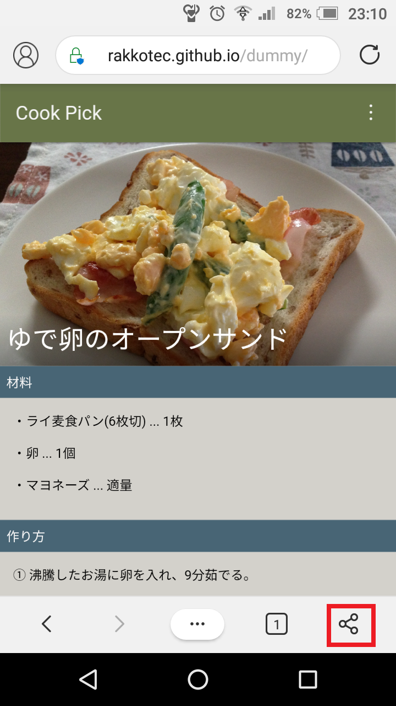
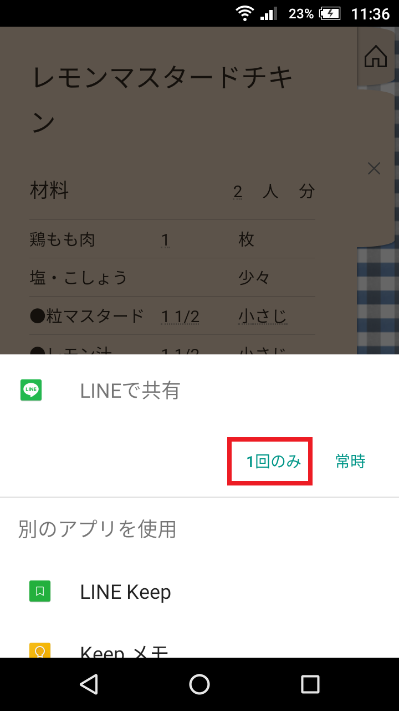

FireFoxでレシピの掲載されているページを開きます。
メニューボタンをタップします。

共有ボタンをタップします。

共有先として、レシピ帳を選択します。

-レシピの管理と分量計算-
Webサイトに掲載されているレシピを読み込むために必要なことは主に2つです。
共有ボタンを押す
レシピ帳を選択する
アプリごとの詳しい操作方法を、以下に記載します。
Chromeでレシピの掲載されているページを開きます。
メニューボタンをタップします。
共有ボタンをタップします。
共有先として、レシピ帳を選択します。
FireFoxでレシピの掲載されているページを開きます。
メニューボタンをタップします。
共有ボタンをタップします。
共有先として、レシピ帳を選択します。
Edgeでレシピの掲載されているページを開きます。
共有ボタンをタップします。
共有先として、レシピ帳を選択します。
料理アプリでレシピの掲載されているページを開きます。
共有(送る)ボタンをタップします。↓こんな感じのアイコンのことが多いです。
共有先として、レシピ帳を選択します。
送りたいレシピを開きます。


レシピの下部にある、共有アイコンをタップします。

送信に使うアプリを選んでタップします。
こんな感じのテキストが送られます。
肉じゃが
材料 (2人分)
豚肉 … 250g
じゃがいも … 4個
たまねぎ … 2個
にんじん … 1本
しらたき … 1袋
砂糖 … 大さじ1.6
醤油 … 大さじ4
酒 … 大さじ2
作り方
1. 肉を炒める
2. 調味料を入れる
3. 玉ねぎ、しらたき、にんじん、じゃがいもの順に切って入れる
4. 蓋をして沸騰状態で20分
5. 火が通ったら蓋を開けて汁気を飛ばす
送ったレシピテキストを長押しします。
転送ボタンをタップします。
転送(1)ボタンをタップします。
他のアプリを選択します。
共有先として、レシピ帳を選択します。
アプリによっては、アプリに付属の共有ボタンから読み込めます。
それができない場合は、以下の手順で読み込みます。
送ったレシピテキストを全て選択します。
出てきた吹き出しの中から、共有ボタンをタップします。
共有先として、レシピ帳を選択します。